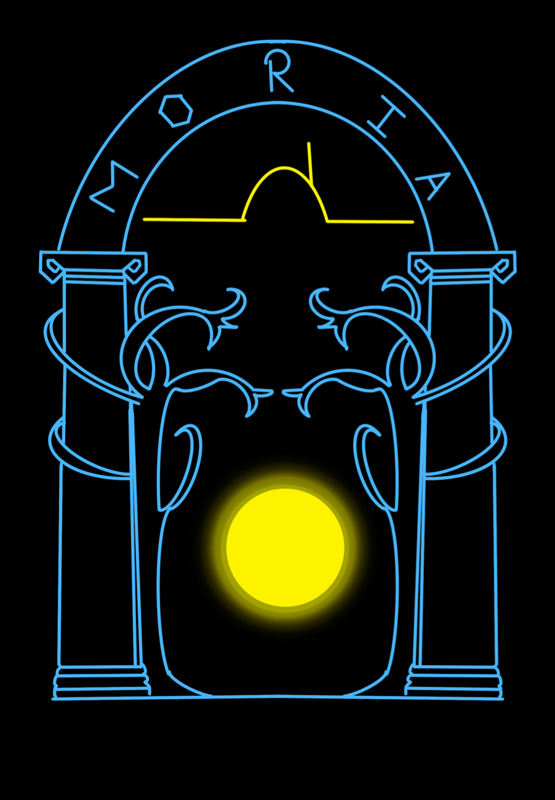

Output Stacks
Prepare and stack HST images. Build a starlist from the images.
Open PDF
00.output_stacks.ipynb

Microlensing Object high-Resolution Imaging Analysis
There are Lord of the Rings references throughout this website and pipeline. The author of this pipeline (me) is a big fan and apologizes for the references.
MORIA is an automated procedure to reduce high-resolution HST images of microlensing targets, build empirical point-spread function models from the data, and perform simultaneous multi-star PSF fitting to blended sources, lenses, and neighbor stars.
A paper on the use of MORIA with KMT-2019-BLG-0253 is available here and is titled: You Shall Not Pass (Without Modeling)
Follow the demo notebooks in order.
Prepare and stack HST images. Build a starlist from the images.
Open PDF
00.output_stacks.ipynb
Make a CMD diagram + identify stars with colors and magnitudes similar to the target.
Open PDF
01.cmd_diagram.ipynb
Construct a PSF model using stars selected to have colors and magnitudes similar to those of the target star.
Open PDF
02.creating_psf.ipynb
Fit one-, two-, and three-star models. Run the last cell of this notebook to meet a silly, old friend.
Open PDF
03.fitting_psfs.ipynb
Match to OGLE-III magnitudes to derive the photometry. Emerge into calibrated light.
Open PDF
04.calibrations.ipynb
Handles coordinate tranformation between HST and Keck. Since this is an optional notebook, the balrog is rumored to be hidden here.
View on GitHub
opt.keck_calib.ipynb
Clone the repository, install the package, and copy the demo notebooks to your working directory.
Clone and Install By:
git clone https://github.com/10ay/MORIA.git
cd MORIA
pip install -e .
Along with you, here are the other eight members of the Fellowship
Nine companions. So be it. You shall be the fellowship of the ring.
Bhadra, T. D. et al. — arXiv:2605.08340